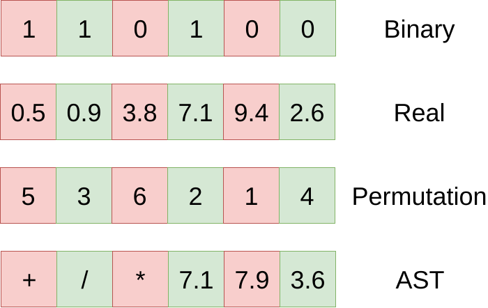
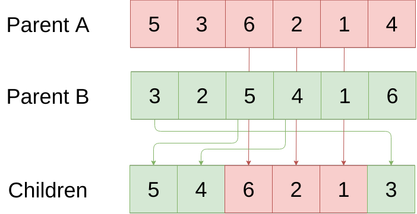
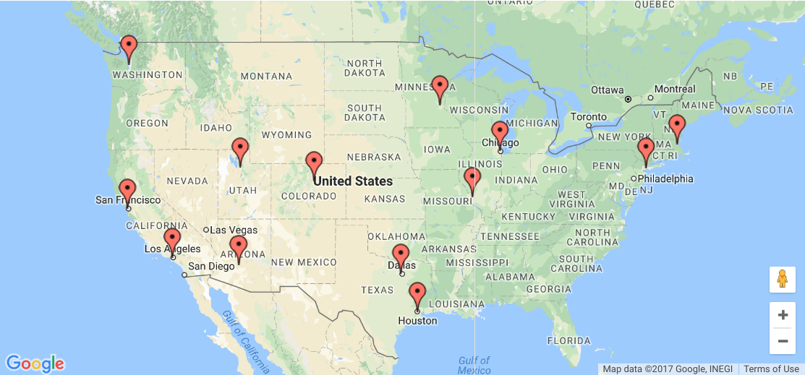
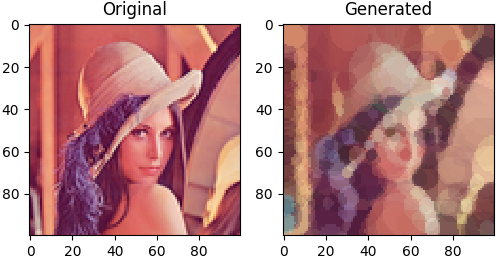
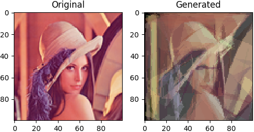

 |
| Some possible ways of representing the individual's information in a chromosome. |
def genetic_algorithm(n):
population = init_population(n)
for _ in xrange(epochs):
fn = fitness(population)
parents = selection(n, fn)
offspring = crossover(parents)
offspring = mutation(offspring)
population = parents + offspring
return best(population) |
| The Order Crossover: a more acceptable crossover for the TSP. |
|
|
| Optimizing a function with genetic algorithm. |
entscheidungsproblem.
Below is the best individual at each epoch:
EPOCH FITNESS CHROMOSOME
#0 86 dktzmkeqixkmpzskjqjn
#1 85 enstfgzpbwrcxoosnfbh
#2 78 jetvbgqcbpceqtnnctdm
#3 66 cpujjdaldsjhuuoraejn
#4 55 enurcichvsoepthmckeh
#5 44 enstfggohqnewnoncmkk
#6 43 bosqbgigbwrculrqcmkm
#7 38 enstfggohqnevqsqcmcj
#8 38 enstfggohqnevqsqcmcj
#9 36 enstdkfkdpnjxqxqalbl
#10 32 eosqbhhibwmfzqspbhdp
#11 27 enstbkbhetogvqsqcmcj
#12 27 enstbkbhetogvqsqcmcj
#13 25 enstbgcidypgwnunbmdl
#14 23 enstcecidupgvqsqcmcj
#15 21 enurcichdqneqosqcmdm
#16 21 enurcichdqneqosqcmdm
#17 17 enstfgcidtoesospbldn
#18 14 enttceciduoesospbldn
#19 14 enttceciduoesospbldn
#20 14 enttceciduoesospbldn
#21 10 enurcheidtoesospblel
#22 10 enurcheidtoesospblel
#23 10 enurcheidtoesospblel
#24 10 enurcheidtoesospblel
#25 10 enurcheidtoesospblel
#26 9 enurcheidungvqrobjel
#27 8 enurcheidwngsospblel
#28 7 enttcieiduogsospblel
#29 6 ensscheidungsospbldn
#30 6 ensscheidungsospbldn
#31 6 ensscheidungsospbldn
#32 4 enttcheidungsospblem
#33 4 enttcheidungsospblem
#34 4 enttcheidungsospblem
#35 3 entrcheiduogsoroblem
#36 3 entrcheiduogsoroblem
#37 2 enuscheidungsoroblem
#38 1 entscheidungsoroblem
#39 1 entscheidungsoroblem
#40 1 entscheidungsoroblem
#41 1 entscheidungsoroblem
#42 1 entscheidungsoroblem
#43 1 entscheidungsoroblem
#44 1 entscheidungsoroblem
#45 1 entscheidungsoroblem
#46 1 entscheidungsoroblem
#47 0 entscheidungsproblem
#48 0 entscheidungsproblem
#49 0 entscheidungsproblem
#50 0 entscheidungsproblem |
| Map of the cities in sample data. |
city_distance = [
[ 0, 2451, 713, 1018, 1631, 1374, 2408, 213, 2571, 875, 1420, 2145, 1972], # New York
[2451, 0, 1745, 1524, 831, 1240, 959, 2596, 403, 1589, 1374, 357, 579], # Los Angeles
[ 713, 1745, 0, 355, 920, 803, 1737, 851, 1858, 262, 940, 1453, 1260], # Chicago
[1018, 1524, 355, 0, 700, 862, 1395, 1123, 1584, 466, 1056, 1280, 987], # Minneapolis
[1631, 831, 920, 700, 0, 663, 1021, 1769, 949, 796, 879, 586, 371], # Denver
[1374, 1240, 803, 862, 663, 0, 1681, 1551, 1765, 547, 225, 887, 999], # Dallas
[2408, 959, 1737, 1395, 1021, 1681, 0, 2493, 678, 1724, 1891, 1114, 701], # Seattle
[ 213, 2596, 851, 1123, 1769, 1551, 2493, 0, 2699, 1038, 1605, 2300, 2099], # Boston
[2571, 403, 1858, 1584, 949, 1765, 678, 2699, 0, 1744, 1645, 653, 600], # San Francisco
[ 875, 1589, 262, 466, 796, 547, 1724, 1038, 1744, 0, 679, 1272, 1162], # St. Louis
[1420, 1374, 940, 1056, 879, 225, 1891, 1605, 1645, 679, 0, 1017, 1200], # Houston
[2145, 357, 1453, 1280, 586, 887, 1114, 2300, 653, 1272, 1017, 0, 504], # Phoenix
[1972, 579, 1260, 987, 371, 999, 701, 2099, 600, 1162, 1200, 504, 0]] # Salt Lake CityEPOCH FITNESS CHROMOSOME
#0 10279 [8, 6, 12, 1, 11, 9, 2, 0, 7, 5, 10, 3, 4]
#1 9972 [7, 0, 2, 9, 3, 5, 11, 6, 8, 1, 4, 12, 10]
#2 9972 [7, 0, 2, 9, 3, 5, 11, 6, 8, 1, 4, 12, 10]
#3 9759 [9, 2, 12, 11, 1, 8, 6, 4, 10, 5, 3, 7, 0]
#4 9509 [8, 6, 1, 11, 4, 10, 5, 9, 7, 0, 2, 3, 12]
#5 9309 [7, 0, 2, 4, 9, 3, 5, 10, 12, 11, 1, 8, 6]
#6 9161 [0, 7, 3, 2, 9, 5, 10, 11, 6, 1, 8, 12, 4]
#7 9161 [0, 7, 3, 2, 9, 5, 10, 11, 6, 1, 8, 12, 4]
#8 9161 [0, 7, 3, 2, 9, 5, 10, 11, 6, 1, 8, 12, 4]
#9 8605 [10, 5, 11, 1, 8, 6, 12, 4, 3, 7, 0, 2, 9]
#10 8605 [10, 5, 11, 1, 8, 6, 12, 4, 3, 7, 0, 2, 9]
#11 8605 [10, 5, 11, 1, 8, 6, 12, 4, 3, 7, 0, 2, 9]
#12 8464 [6, 8, 11, 1, 12, 4, 3, 10, 5, 9, 2, 7, 0]
#13 8464 [6, 8, 11, 1, 12, 4, 3, 10, 5, 9, 2, 7, 0]
#14 8464 [6, 8, 11, 1, 12, 4, 3, 10, 5, 9, 2, 7, 0]
#15 8464 [6, 8, 11, 1, 12, 4, 3, 10, 5, 9, 2, 7, 0]
#16 8139 [0, 7, 2, 9, 5, 10, 3, 4, 12, 11, 1, 8, 6]
#17 8139 [0, 7, 2, 9, 5, 10, 3, 4, 12, 11, 1, 8, 6]
#18 8139 [0, 7, 2, 9, 5, 10, 3, 4, 12, 11, 1, 8, 6]
#19 8139 [0, 7, 2, 9, 5, 10, 3, 4, 12, 11, 1, 8, 6]
#20 8139 [0, 7, 2, 9, 5, 10, 3, 4, 12, 11, 1, 8, 6]
#21 8139 [0, 7, 2, 9, 5, 10, 3, 4, 12, 11, 1, 8, 6]
#22 7737 [6, 8, 1, 11, 12, 4, 5, 10, 9, 3, 2, 7, 0]
#23 7737 [6, 8, 1, 11, 12, 4, 5, 10, 9, 3, 2, 7, 0]
#24 7737 [6, 8, 1, 11, 12, 4, 5, 10, 9, 3, 2, 7, 0]
#25 7599 [7, 0, 2, 3, 9, 10, 5, 4, 12, 11, 1, 8, 6]
#26 7599 [7, 0, 2, 3, 9, 10, 5, 4, 12, 11, 1, 8, 6]
#27 7599 [7, 0, 2, 3, 9, 10, 5, 4, 12, 11, 1, 8, 6]
#28 7599 [7, 0, 2, 3, 9, 10, 5, 4, 12, 11, 1, 8, 6]
#29 7599 [7, 0, 2, 3, 9, 10, 5, 4, 12, 11, 1, 8, 6]
#30 7599 [7, 0, 2, 3, 9, 10, 5, 4, 12, 11, 1, 8, 6] |
| Result trying to draw the left image with circles. |
 |
| Result trying to draw the left image with polygons. |